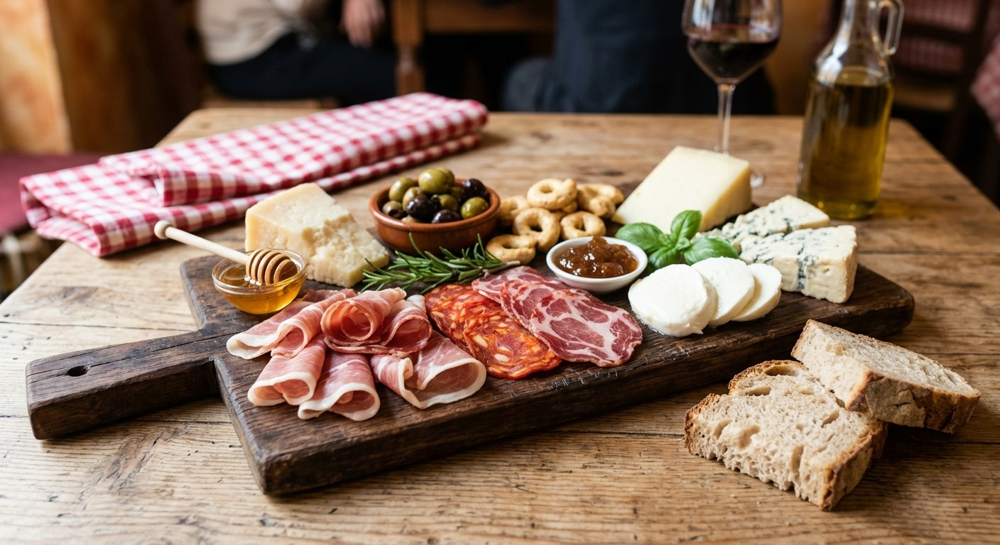
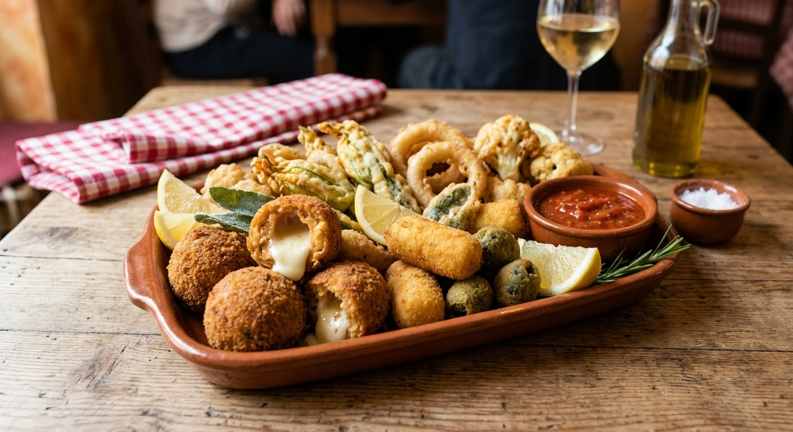
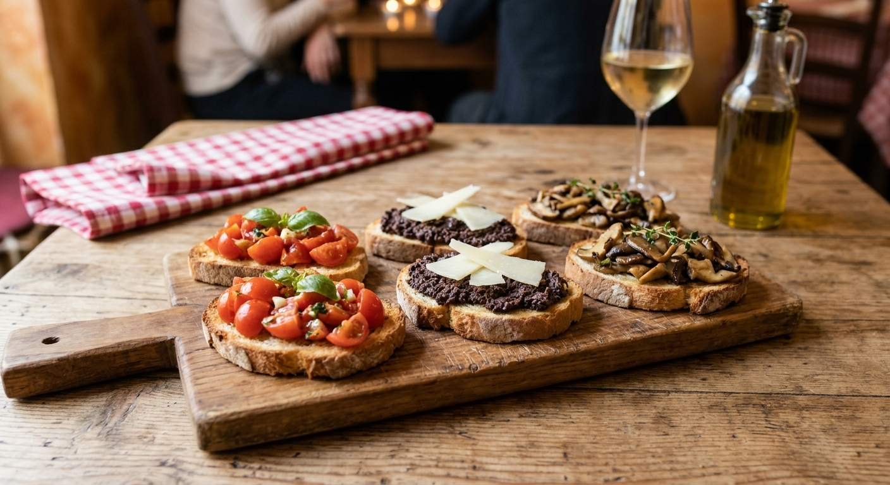

Dalla pasta fresca fatta in casa ogni mattina alle ricette
tramandate da generazioni.
Presso la Trattoria IL PANZONE, ogni piatto è una
celebrazione dell'ospitalità italiana.
UN RICCO PERCORSO TRA I SAPORI AUTENTICI DEL NOSTRO TERRITORIO. UNA SELEZIONE CURATA DI SALUMI STAGIONATI E FORMAGGI TIPICI, ACCOMPAGNATI DA OLIVE CONDITE, TARALLI FRAGRANTI, MIELE D'APE E CONFETTURE ARTIGIANALI, SERVITI CON PANE CASERECCIO APPENA AFFETTATO. IDEALE DA CONDIVIDERE!

Prezzo: 15.00€
Un'esplosione di croccantezza e sapore per iniziare al meglio il pasto. Una ricca selezione di fritti tradizionali preparati al momento: supplì dal cuore filante, crocchette di patate dorate, verdure di stagione in pastella e olive ascolane, fritti ad arte in un'impanatura leggera e dorata. Croccanti fuori, morbidi e saporiti all'interno.

Prezzo: 10.00€
Fette di pane casereccio abbrustolite alla brace e condite con ingredienti freschi e genuini. Un assortimento goloso che comprende le classiche pomodorini freschi, basilico e aglio, quelle con paté di olive nere e scaglie di formaggio, e quelle ai funghi trifolati all'olio extravergine d'oliva. La semplicità della tradizione servita su tagliere.

Prezzo: 5.00€